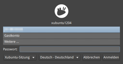
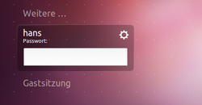

LightDM
Hinweis:
Seit 2011 wurde die hier beschriebene Version 1.0 von LightDM kontinuierlich weiterentwickelt. Die meisten Informationen treffen zwar auch für jüngere Ubuntu-Versionen zu, allerdings kann es bei Details zu Abweichungen kommen.
Dieser Artikel wurde für die folgenden Ubuntu-Versionen getestet:
Ubuntu 14.04 Trusty Tahr
Zum Verständnis dieses Artikels sind folgende Seiten hilfreich:
 LightDM
LightDM  (Light Display Manager) ist ein Displaymanager, der ab Ubuntu 11.10 den lange Jahre von Ubuntu und Xubuntu genutzten GDM ablöst. Die Neuentwicklung bricht mit der bisherigen Tradition, dass fast jede Desktop-Umgebung ihre eigene Anwendung für die grafische Anmeldung mitbringt (GNOME – GDM, KDE – KDM, LXDE – LXDM) und ermöglicht so (wieder) eine Desktop-übergreifende Lösung, die es in der Vergangenheit mit XDM bereits einmal gab.
(Light Display Manager) ist ein Displaymanager, der ab Ubuntu 11.10 den lange Jahre von Ubuntu und Xubuntu genutzten GDM ablöst. Die Neuentwicklung bricht mit der bisherigen Tradition, dass fast jede Desktop-Umgebung ihre eigene Anwendung für die grafische Anmeldung mitbringt (GNOME – GDM, KDE – KDM, LXDE – LXDM) und ermöglicht so (wieder) eine Desktop-übergreifende Lösung, die es in der Vergangenheit mit XDM bereits einmal gab.
Verwirklicht wird dies durch die Trennung der grafischen Gestaltung von der eigentlichen Funktionalität des Anmelde-Dienstes. Dadurch entfallen auch die GNOME- bzw. KDE-spezifischen Bibliotheken, die bisher installiert werden mussten, falls man GDM oder KDM unter einer anderen grafischen Desktop-Umgebung verwenden wollte. Für das Layout und das Design des "Greeters" werden stattdessen eigene Komponenten zur Unterstützung der unterschiedlichen Grafikbibliotheken wie GTK oder Qt eingesetzt.
Installation¶
 Ab Ubuntu 11.10 ist LightDM bei Ubuntu, Xubuntu und inzwischen auch bei Ubuntu MATE bereits vorinstalliert. Lubuntu verwendet LightDM ab 12.04, Kubuntu dagegen nur von 12.10 bis 14.10, während Ubuntu GNOME auf GDM setzt.
Ab Ubuntu 11.10 ist LightDM bei Ubuntu, Xubuntu und inzwischen auch bei Ubuntu MATE bereits vorinstalliert. Lubuntu verwendet LightDM ab 12.04, Kubuntu dagegen nur von 12.10 bis 14.10, während Ubuntu GNOME auf GDM setzt.
Möchte man das Programm nachinstallieren, benötigt man das folgende Paket [1]:
lightdm
 mit apturl
mit apturl
Paketliste zum Kopieren:
sudo apt-get install lightdm
sudo aptitude install lightdm
Dieses Paket allein reicht allerdings nicht aus, es wird zusätzlich noch die entsprechende Komponente für die gewünschte Desktop-Umgebung benötigt:
| gewünschte Desktop-Umgebung | ||
| Unity | Xfce, LXDE | KDE |
Paketliste zum Kopieren: sudo apt-get install unity-greeter
sudo aptitude install unity-greeter
|
Paketliste zum Kopieren: sudo apt-get install lightdm-gtk-greeter
sudo aptitude install lightdm-gtk-greeter
|
Paketliste zum Kopieren: sudo apt-get install lightdm-kde-greeter
sudo aptitude install lightdm-kde-greeter
|
Während unter Kubuntu die Konfiguration via
"Systemeinstellungen -> Systemverwaltung -> Login Screen (LightDM)"
vorgenommen werden kann, wird für Unity noch das folgende Paket benötigt:
gnome-settings-daemon
mit apturl
Paketliste zum Kopieren:
sudo apt-get install gnome-settings-daemon
sudo aptitude install gnome-settings-daemon
Konfiguration¶
 Die Konfiguration ist in zwei Ordnern zu finden:
Die Konfiguration ist in zwei Ordnern zu finden:
/usr/share/lightdm/lightdm.conf.d/ - systemweite Vorgaben
/etc/lightdm/lightdm.conf.d/ - benutzerdefinierte Anpassungen
die mit einem Texteditor [2] und Root-Rechten bearbeitet werden können.
Innerhalb der beiden Ordner legt die Nummerierung der Dateien fest, in welchen Reihenfolge diese abgearbeitet werden (aufsteigend, also 01 vor 99). Praktisch findet mal also bei Ubuntu 14.04 die Datei /usr/share/lightdm/lightdm.conf.d/50-unity-greeter.conf mit den systemweiten Vorgaben, während Xubuntu 14.04 die eigenen Anpassungen in der Datei /etc/lightdm/lightdm.conf.d/10-xubuntu.conf festlegt. Um eigene Einstellungen umzusetzen, erstellt man mit Root-Rechten eine Datei /etc/lightdm/lightdm.conf.d/XX-ZWECK.conf, also z.B. /etc/lightdm/lightdm.conf.d/90-autologin.conf für eine automatische Anmeldung.
Experten-Info:
Statt dieser recht aufwendigen Methode mit mehreren Konfigurationsdateien kann auch einfach weiterhin die Datei /etc/lightdm/lightdm.conf für benutzerdefinierte Anpassungen verwendet werden.
Prinzipiell sind die Konfigurationsdateien in [Abschnitte] gegliedert, die jeweils ein oder mehrere Zeilen in der Form Option=Wert enthalten. Angaben hinter dem Kommentarzeichen # werden nicht berücksichtigt. Zuerst ein einfaches Beispiel, wie es von Ubuntu 12.04 verwendet wird:
1 2 3 | [SeatDefaults] user-session=ubuntu greeter-session=unity-greeter |
Darüber hinaus sind weitere Abschnitte in der Form [Seat:n] möglich. Diese entsprechen zusätzlichen XServer-Sitzungen, werden einfach durchnummeriert und überschreiben die Vorgaben aus [SeatDefaults]. Beispiel: seats=Seat:0, Seat:1 (siehe auch Starten von zwei graphischen Sitzungen).
Experten-Info:
Ab Ubuntu 15.10 heißt es [Seat:*] statt [SeatDefaults].
Automatische Anmeldung¶
Achtung!
Wer ein verschlüsseltes Homeverzeichnis verwendet, sollte auf eine automatische Anmeldung verzichten, weil dadurch der Aspekt der Datensicherheit unterlaufen und die Funktionsweise erheblich beeinträchtigt wird.
Für eine automatische Anmeldung müssen die folgenden Zeilen bearbeitet werden. Beispiel:
1 2 3 4 | autologin-user=Benutzername autologin-user-timeout=0 #autologin-session=(bisher nicht implementiert) #user-session=ubuntu |
Als Benutzername wird das gewünschte Benutzerkonto eingetragen, hinter user-session= die gewünschte Sitzung (Desktop-Umgebung), falls man nicht die zuletzt benutzte verwenden möchte. Nach dem nächsten Neustart sollte die automatische Anmeldung funktionieren.
Alternativ kann die automatische Anmeldung mittels folgendem Befehl für das Benutzerkonto BENUTZERNAME aktiviert werden:
sudo /usr/lib/lightdm/lightdm-set-defaults --autologin BENUTZERNAME
Benutzerliste¶
Normalerweise ist die Anzeige der auf dem System vorhandenen Benutzer aktiv. Da dies unter Umständen sicherheitsrelevant ist, kann man die Benutzerliste deaktivieren:
1 | greeter-hide-users=true |
Themen¶
|  |
| Greeter von Xubuntu 12.04 |
Bisher gibt es kaum fertige Themen zur Auswahl. Da für den "Greeter" verschiedene Grafikbibliotheken benutzt werden können, muss als Grundvoraussetzung das jeweilige Paket wie
unity-greeter, ab Ubuntu 11.10
lightdm-gtk-greeter, ab Ubuntu 11.10, MATE, Xfce und LXDE
lightdm-kde-greeter, ab Ubuntu 11.10, KDE
installiert sein. Die Konfiguration des Aussehens bzw. Verhaltens des Greeters erfolgt je nach Desktop-Umgebung unterschiedlich. Informationen zur Situation unter Unity sind dem nächsten Abschnitt zu entnehmen, während sich Xubuntu und Lubuntu über eine Konfigurationsdatei anpassen lassen (siehe übernächster Abschnitt).
Unity¶
Die Konfiguration des Unity-Greeters erfolgt über den grafischen dconf-editor. Da LightDM eine eigene Benutzerkennung verwendet, kümmern sich die ersten beiden Befehle um einen Benutzerwechsel:
xhost +SI:localuser:lightdm sudo su lightdm -s /bin/bash dconf-editor
Die relevanten Einträge befinden sich unterhalb von "com -> canonical -> unity-greeter". Außerdem sollte man beachten, dass nun das eigene Hintergrundbild automatisch an das des Anmeldebildschirms angepasst werden kann. Nach Abschluss der Bearbeitung sollte man die aufgerufene Shell wieder verlassen:
exit
Alternativ zum grafischen Konfigurationswerkzeug kann man alle gewünschten Einstellungen mit dem GSettings configuration tool ("man gsettings") im Terminal bzw. auf der Kommandozeile ändern und/oder prüfen. Hier nur 2 Beispiele: das Gitter (Weiße Punkte) auf dem Anmeldebildschirm entfernen und den Anmeldesound (Trommeln) abschalten.
Dem Benutzer
lightdmeine Verbindung zum XServer gestatten:sudo xhost +SI:localuser:lightdm
Wechseln zum Benutzer
lightdm:sudo su lightdm -s /bin/bash
Konfiguration:
Deaktivieren das Punktegitter im Unity-Greeter:
gsettings set com.canonical.unity-greeter draw-grid false
Kontrolle:
gsettings get com.canonical.unity-greeter draw-grid
Trommelwirbel abschalten (bei Problemen siehe auch Akustische Rückmeldung):
gsettings set com.canonical.unity-greeter play-ready-sound false
Kontrolle:
gsettings get com.canonical.unity-greeter play-ready-sound
Schriftgröße anpassen (Originalgröße: 10):
gsettings set com.canonical.unity-greeter font-name "Ubuntu Sans 12"
Kontrolle:
gsettings get com.canonical.unity-greeter font-name
Die Shell des Benutzers
lightdmverlassen:exit
Andere Desktop-Umgebungen¶
Um das Aussehen anzupassen, bearbeitet man die Konfigurationsdatei /etc/lightdm/lightdm-gtk-greeter.conf mit Root-Rechten [3]. Alternativ steht der grafische LightDM-GTK+ Einstellungseditor zur Verfügung.
Auch Unity benutzte bis 11.10 eine solche Datei (/etc/lightdm/unity-greeter.conf), die hier als Beispiel benutzt wird:
1 2 3 4 5 6 7 8 9 10 | [greeter] background=/usr/share/backgrounds/Hintergrund.jpg logo=/usr/share/unity-greeter/logo.png theme-name=Ambiance icon-theme-name=ubuntu-mono-dark font-name=Ubuntu 11 xft-antialias=true xft-dpi=96 xft-hintstyle=hintslight xft-rgba=rgb |
Durch Änderung der jeweiligen Zeilen lassen sich so beispielsweise das Hintergrundbild, das (GTK-/Qt-)Thema, der verwendete Symbolsatz oder die Schrift bzw. Schriftgröße anpassen.
Testmodus¶
Um nicht jedes Mal den Rechner neu starten zu müssen, kann bei eigenen Anpassungen der folgende Befehl zur optischen Kontrolle verwendet werden:
lightdm --test-mode
Voraussetzung ist die Installation des folgenden Pakets:
xserver-xephyr (siehe Xephyr)
mit apturl
Paketliste zum Kopieren:
sudo apt-get install xserver-xephyr
sudo aptitude install xserver-xephyr
Der Testmodus wird mit Strg + C beendet. Bei einer automatischen Anmeldung funktioniert er nicht.
Optionen¶
Nachfolgend eine Liste der möglichen Abschnitte und Wertepaare für die Datei /etc/lightdm/lightdm.conf der Version 1.0 vom LightDM. Eine vollständige Auflistung aller möglichen Optionen erhält man mit dem Befehl:
zless /usr/share/doc/lightdm/lightdm.conf.gz
lightdm.conf¶
| lightdm.conf | |
[LightDM] | allgemeine Angaben |
start-default-seat= | Voreinstellungen aktiviert (true) oder deaktiviert (false). Standard: true |
greeter-user= | Benutzer, unter dem der Greeter ausgeführt wird. Standard: lightdm |
minimum-display-number=n | ?? Standard: 0. |
minimum-vt=n | erstes virtuelles Terminal. Standard: 7 |
user-authority-in-system-dir= | Standard: false |
guest-account-script= | Standard: guest-account |
log-directory= | Standard: /var/log/lightdm |
run-directory= | Standard: /var/run/lightdm |
cache-directory= | Standard: /var/cache/lightdm |
xsessions-directory | Standard: /usr/share/xsessions |
xgreeters-directory | Standard: /usr/share/xgreeters |
[SeatDefaults] | Standardeinstellungen |
xserver-command= | Standard: X |
xserver-layout= | |
xserver-config= | |
xserver-allow-tcp= | Standard: false |
greeter-session=... | Möglich sind unter Ubuntu unity-greeter, lightdm-gtk-greeter oder lightdm-kde-greeter (siehe auch Themen) |
greeter-hide-users= | Anzeige der Benutzerliste (siehe auch users.conf). Standard: false |
greeter-show-manual-login= | Anzeige der manuellen Eingabemaske für den Benutzernamen. Standard: false (ab Version 1.2) |
user-session=... | Sitzungsauswahl |
allow-guest= | Standard: true |
guest-session= | (bisher nicht implementiert) |
autologin-user=... | Siehe auch Automatische Anmeldung. |
autologin-user-timeout= | Vorgabe: 0 |
autologin-session= | (bisher nicht implementiert) |
autologin-guest= | Standard: deaktiviert (false) |
session-wrapper= | Standard: lightdm-session |
exit-on-failure= | Displaymanager bei Fehlern beenden. Standard: false |
xdmcp-manager= | Programm |
xdmcp-port= | Standard: 177 |
xdmcp-key= | Schlüssel |
| An-/Abmelde-Skripte | |
display-setup-script= | Skript, das beim Start der Anmeldungssitzung ausgeführt wird (mit Rootrechten!) |
greeter-setup-script= | Skript, das beim Start der Anmeldung ausgeführt wird (mit Rootrechten!) Beispiel: greeter-setup-script=/usr/bin/numlockx on (Nummernblock aktivieren) |
session-setup-script= | Skript, das beim Start einer Benutzersitzung ausgeführt wird (mit Rootrechten!) Beispiel: /usr/share/lightdm/guest-session/guest-session-setup.sh |
session-cleanup-script= | Skript, das beim Beenden einer Benutzersitzung ausgeführt wird (mit Rootrechten) Beispiel: /usr/share/lightdm/guest-session/guest-session-cleanup.sh |
[XDMCPServer] | Anmeldung von entfernten Rechnern |
enabled= | aktiviert (true) oder deaktiviert (false). Standard: (false) |
port=n | Standard: 177 |
key=0x0123456789ABCD | 56-Bit DES Schlüssel in hexadezimaler Schreibweise für XDM-AUTHENTICATION-1 oder leer, wenn nicht genutzt. Alternativ ein beliebiger Begriff, dessen 7 erste Stellen verwendet werden. |
[VNCServer] | Anmeldung von entfernten Rechnern via VNC |
enabled= | aktiviert (true) oder deaktiviert (false). Standard: (false) |
port=xxx | Standard: 5900 |
users.conf¶
| users.conf | |
[UserAccounts] | Allgemeine Angaben zu Benutzern |
minimum-uid=n | Benutzerkennungen (UIDs) kleiner als n nicht anzeigen. Vorgabe: 500 |
hidden-users=... | Liste (weiterer) nicht anzuzeigender Benutzerkennungen. Beispiel: nobody noaccess Funktioniert aktuell nur mit Benutzern, dessen UID < 1000 ist. How do I hide a particular user from the LightDM login screen? |
hidden-shells=... | Liste von Shells, deren Benutzer ebenfalls nicht angezeigt werden. Beispiel: /bin/false /usr/sbin/nologin |
Experten-Info:
Wenn das Paket accountsservice installiert ist, werden Einstellungen in /etc/lightdm/users.conf ignoriert. Diese sind dann über die Benutzerverwaltung vorzunehmen.
keys.conf¶
| keys.conf | |
[keyring] | Angaben zum Schlüsselbund |
a=0x0123456789ABCD | Schlüssel in hexadezimaler Schreibweise |
b=... | weiterer Schlüssel (secret) |
Verwendung¶
|  |
| Greeter von Ubuntu 11.10 |
Die Benutzung von LightDM unterscheidet sich nicht von der anderer Displaymanager. Zuerst gibt man den Benutzernamen ein (oder wählt ihn aus der Benutzerliste aus), bestätigt mit ⏎ und wiederholt den Vorgang für das Kennwort. Nach einem zweiten ⏎ wird die zuletzt benutzte Sitzung gestartet – wenn die Angaben korrekt waren. Bei Fehlern darf die Anmeldung beliebig oft wiederholt werden.
Möchte man die Sitzung (die gewünschte Desktop-Umgebung) oder die Sprache der Sitzung ändern, kann dies nach der Eingabe oder Auswahl des Benutzernamens über ein Zahnrad-Symbol erfolgen. Zusätzlich wird die Möglichkeit geboten, den Rechner auszuschalten oder neu zu starten.
Gastsitzung¶
Die Gastsitzung kann wie folgt deaktiviert werden:
Man erstellt mit Root-Rechten die Datei /etc/lightdm/lightdm.conf.d/50-disable-guest-session.conf und folgendem Inhalt:
[SeatDefaults] allow-guest=false
Entscheidend sind beim Dateinamen die Zahl am Anfang (die zwischen 50 und 99 liegen muss) und die Endung .conf. Der Rest dazwischen kann beliebig angepasst werden. Um die Gastsitzung wieder zu aktivieren, verwendet man folgenden Befehl:
sudo rm /etc/lightdm/lightdm.conf.d/50-disable-guest-session.conf
Ab Ubuntu 15.10¶
Man erstellt mit Root-Rechten die Datei /etc/lightdm/lightdm.conf.d/50-disable-guest-session.conf und folgendem Inhalt:
[Seat:*] allow-guest=false
Dies kann über folgenden Befehl vereinfacht werden:
sudo sh -c 'printf "[Seat:*]\nallow-guest=false\n" >/etc/lightdm/lightdm.conf.d/50-disable-guest-session.conf'
Um die Gastsitzung wieder zu aktivieren, verfährt man wie oben angegeben (siehe auch How do I disable the guest session? ).
Remote-Login¶
Ein Remote-Login ist vorhanden, mit dem man sich direkt über das Netzwerk an verschiedenen Systemen aus der Ferne (remote) anmelden kann. Wer diese Funktion abschalten möchte, verwendet die Option:
greeter-show-remote-login=false
im Abschnitt [SeatDefaults] in der Datei /etc/lightdm/lightdm.conf.
Problembehebung¶
Displaymanager ändern¶
Um bei Problemen den Displaymanager (wieder) auszutauschen, kann man den folgenden Befehl nutzen, der in diesem Beispiel einen installierten GDM (re)aktiviert:
sudo dpkg-reconfigure gdm
Bei Kubuntu 14.04 ersetzt man gdm durch kdm. Ab Kubuntu 15.04 verwendet Kubuntu SDDM.
Man kann die Änderung des Displaymanagers alternativ auch in der Datei /etc/X11/default-display-manager vornehmen. Dort ist das jeweilige Programm inklusive des vollständigen Pfads einzutragen.
Beenden und (Neu-)Starten samt XServer¶
Manchmal kommt es vor, dass man bestimmte Aufgaben ohne laufenden XServer bzw. auf der Konsole durchführen möchte. Mit den Tastenkombinationen Tasten Strg + Alt + F1 bis Strg + Alt + F6 kann man in sechs unabhängige Textkonsolen wechseln. Befindet man sich erst einmal auf einer Textkonsole, reicht beispielsweise Alt + F2 , um zur zweiten Textkonsole zu wechseln. Zurück zur laufenden Sitzung bzw. der graphischen Oberfläche gelangt man mit Alt + F7 .
Von einer virtuellen Textkonsole (ttyX) aus kann man LightDM mitsamt Xserver wie folgt beenden, starten oder neu starten.
Starten von zwei graphischen Sitzungen¶
Es ist möglich, LightDM so zu konfigurieren, dass zwei graphische Sitzungen gestartet werden. Dies kann z.B. für Media-Server von Interesse sein. In die Datei /etc/lightdm/lightdm.conf fügt man dazu folgende Einträge hinzu:
[LightDM] seats=Seat:0, Seat:1 ... [Seat:0] user-session=ubuntu autologin-user= [Seat:1] user-session=ubuntu autologin-user=
Die Einstellungen in den jeweiligen [Seat:x]-Abschnitten überschreiben Konfigurationseinstellungen des Abschnitts [SeatDefaults] für die jeweilige Sitzung. Die Ausgabe der zweiten Sitzung erfolgt auf dem zweiten Bildschirm. Ist nur ein Monitor angeschlossen, kann mit
Strg +
Alt +
F8 und
Strg +
Alt +
F7 zwischen den Sitzungen umgeschaltet werden.
Benutzerbild¶
Um das vor dem Benutzernamen befindliche Bild zu ändern, kopiert man beispielsweise eine Symboldatei aus /usr/share/pixmaps/ in das eigene Homeverzeichnis und benennt diese Datei in ~/.face um. Inwieweit das Bildformat eine Rolle spielt, ist nicht bekannt. Aber zumindest mit .png und .jpg-Dateien und neueren Versionen von LightDM klappt es einwandfrei.
Nutzt man ein verschlüsseltes Homeverzeichnis, kann LightDM die verschlüsselten Daten des Benutzers (logischerweise) nicht lesen, da der Benutzer lightdm keinen Zugriff auf diese Ressourcen hat. Dies gilt auch für den nächsten Abschnitt.
Hintergrundbild¶
Unter Unity wird der Hintergrund des Anmeldebildschirms automatisch an das eigene Hintergrundbild angepasst. Das funktioniert aber nur, wenn die Bilder direkt unterhalb von ~/Bilder/ im Homeverzeichnis (nicht in einem Unterverzeichnis!) oder im Ordner /usr/share/backgrounds/ liegen. Verantwortlich für dieses Verhalten ist der Eintrag "draw-usr-backgrounds=true". Zur Konfiguration für Unity siehe oben.
Sollte weder das automatische Übernehmen des Bildes noch ein manueller Eintrag in der Konfigurationsdatei funktionieren, dann gibt es noch die Möglichkeit das Hintergrundbild von LightDM mit folgendem D-Bus-Befehl zu ändern:
dbus-send --system --print-reply --dest=org.freedesktop.Accounts /org/freedesktop/Accounts/User$(id -u) org.freedesktop.Accounts.User.SetBackgroundFile string:/PFAD/ZUM/HINDERGRUNDBILD.JPG|PNG
Dabei ist /PFAD/ZUM/HINDERGRUNDBILD.JPG|PNG am Ende des Befehls durch den korrekten Pfad und Dateinamen zu ersetzen.
Akustische Rückmeldung¶
Man kann bei Erscheinen der grafischen Anmeldung auch eine Audiodatei abspielen, um zu signalisieren, dass der Rechner hochgefahren und einsatzbereit ist. Eine allgemeine Anleitung, die nicht nur bei Xubuntu funktioniert, findet sich im Artikel Xfce Systemklänge. Wer dagegen einen Weg sucht, eine akustische Rückmeldung zu deaktivieren, sei How do I disable the drum beat sound on the login screen? empfohlen.
LightDM startet nicht auf SSD¶
Auf Rechnern mit sehr kurzem Startvorgang kann es zu Problemen mit LightDM kommen, siehe 969489. Ein Workaround ist das erzwungene Verlangsamen des Starts von LightDM. Dazu muss die Datei /etc/init/lightdm.conf mit einem Editor [2] mit Root-Rechten [3] bearbeitet werden. Vor der Zeile:
exec /usr/bin/lightdm
wird dazu folgende Zeile eingefügt, um eine Verzögerung von 2 Sekunden (bei Bedarf erhöhen) zu erhalten:
sleep 2
Anmeldung scheitert ("failed to load session")¶
Eine Problembeschreibung und -lösung befindet sich im Artikel Displaymanager.
Links¶
LightDM
- Ubuntu-WikiLightDM Reference Manual
für Entwickler
LightDM
- Archlinux WikiLightDM-GTK+ Einstellungseditor - grafische Konfiguration von LightDM (nur Lubuntu, Xubuntu und Ubuntu MATE)
So You Want to Write a LightDM Greeter…
- Blogbeitrag 02/2012Displaymanager
 Übersichtsartikel
Übersichtsartikel
- Erstellt mit Inyoka
-
 2004 – 2017 ubuntuusers.de • Einige Rechte vorbehalten
2004 – 2017 ubuntuusers.de • Einige Rechte vorbehalten
Lizenz • Kontakt • Datenschutz • Impressum • Serverstatus -
Serverhousing gespendet von